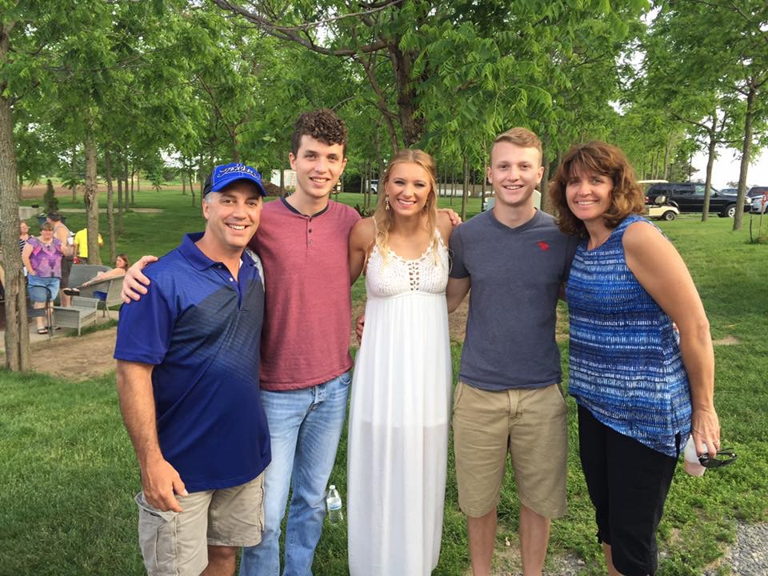

Wanna learn about me, well you have came to the right page! To start I grew up in Sheboygan, Wisconsin! It is a town only 2 hours away from Madison, located right on lake Michigan! I grew up in a family with a younger sister, an older brother, we have our differences but I love them to death and would do anything for them. I also grew up with 3 dogs, and some have changed over the years which is sad, but they are family and are the highlight of my day when I get to see them. I am a 22 year old senior at UW-Madison majoring in Economics, my future plan is to take over my family business as CEO of an industrial electrical company, I could not be more thankful for this opportunity and I cannot wait to see where it takes me! Here is a photo of me with my family! I am next to my mother on the right!
